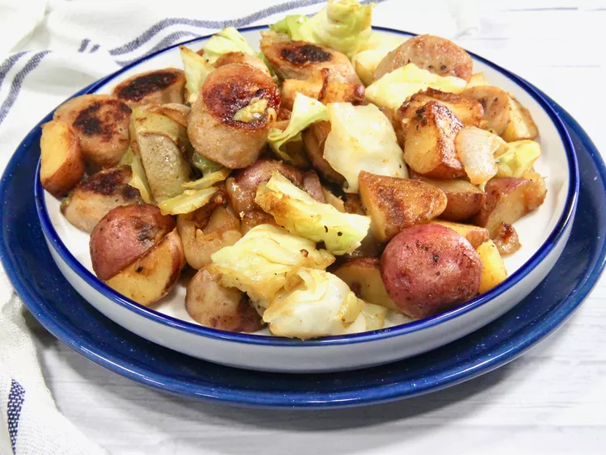

HOME
Cabbage, Potato, and Sausage Skillet Recipe

Description
This cabbage, potato, and sausage skillet is a flavor-filled comfort food skillet full of potatoes, cabbage, onions, and sausage that’s humble and budget-friendly. Place a bottle of hot sauce on the table for those who enjoy a little spiciness.
Ingredients
- 3 tablespoons olive oil, divided, or as needed
- 12 ounces precooked apple chicken sausage links (such as Trader Joe’s®)
- 1 1/2 pounds potatoes, unpeeled and quartered
- 1 onion, halved and sliced
- 1/3 cup chicken broth
- 5 cups coarsely chopped cabbage
- 1 teaspoon garlic powder
- 1/2 teaspoon paprika
- salt and freshly ground black pepper
Steps
- Heat 1 tablespoon oil in a large skillet over medium heat.
- Add sausage to the skillet, and cook, flipping occasionally, until lightly browned on both sides, about 5 to 8 minutes. Remove sausage; set aside.
- Heat remaining oil in the skillet; stir in potatoes and onions. Cook and stir until potatoes just begin to brown lightly; add chicken broth and cover the skillet. Continue to cook, stirring occasionally, until potatoes are golden brown, 12 to 17 minutes.
- Add cabbage, garlic powder, and paprika, and stir well. Cook until cabbage is soft and tender, 6 to 8 minutes more. Return sausage to the skillet, and cook until heated through, 2 to 3 minutes.
- Season to taste with salt and pepper, and serve.